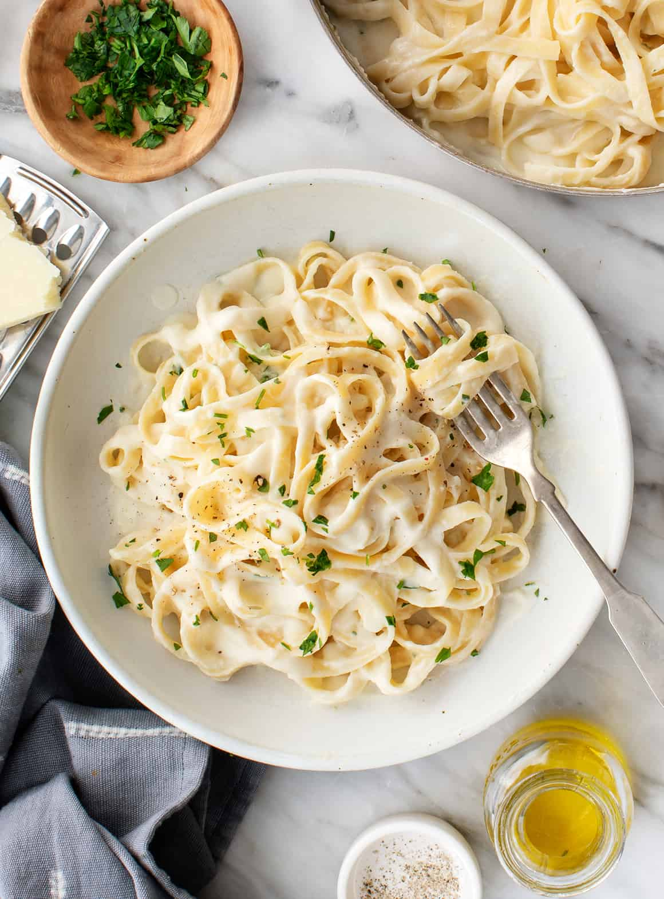

Fettucini Alfredo

Description
Fettuccine Alfredo is a classic Italian dish made with fettuccine pasta and a rich, creamy sauce. The sauce is typically made with butter, heavy cream, and Parmesan cheese, and is seasoned with garlic and black pepper. The pasta is cooked until al dente and then tossed with the sauce until it is well coated. The dish is often garnished with chopped parsley and served hot. It’s a delicious and indulgent meal that’s perfect for a special occasion or a cozy night in.
Ingredients
- Pasta:Of course, you’ll need fettuccine pasta.
- Butter:This Alfredo sauce starts with two sticks of butter.
- Cream:The rich sauce calls for almost a cup of heavy cream.
- Seasonings:The fettuccine Alfredo is simply seasoned with salt, pepper, and garlic salt.
- Cheese:You’ll need Romano and Parmesan cheeses.
Steps
- Cook the pasta.
- Melt the butter and cream together on the stove, season, and stir in the cheese.
- Toss the pasta in the cheese sauce.